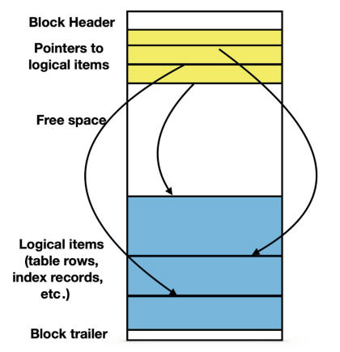
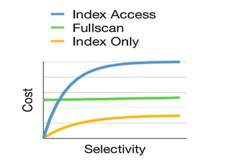

for choosing the best query we need some metrics to show selected Algorithm is appropriate for our query. there is two main factors:
any file use in database is divided into blocks of the same length. postgresql uses 8192 bytes block. a block is the unit which is transfered between hard drive and main memory. the number of i/o access is the number of blocks that we want to read.
here is view of database storage structure
The allocation of items to blocks also depends on the type of the database object. Table rows are stored using a data structure called a heap: a row can be inserted in any block that has sufficient free space, without any specific ordering. Other objects (e.g., indexes) may use blocks differently.
in full scan database engine reads all data from disk and apply filters. here is s simplae pseudocode for this operation
FOR each block IN a_table LOOP
read block;
FOR each row IN block LOOP
IF filter_condition (row)
THEN output (row)
END IF;
END LOOP;
END LOOP;
PostgreSQL allows for building additional, redundant data structures, making data access dramatically faster than a simple sequential read.These additional structures are called indexes.
indexes provide additional data access paths. they allow us to determine what values are stored in the rows of a table without actually reading the table—this is how index-based access works
The algorithm extracts a list of pointers to blocks that contain rows with values satisfying the filtering condition, and only these blocks are read from the table
To get a table row from a pointer, the block containing this row must be read
Note: for small values of selectivity, most likely, all rows satisfying the filtering conditions will be located in different blocks and, consequently, the cost is proportional to the number of result rows. For larger values of selectivity, the number of processed blocks approaches the total number of blocks. In the latter case, the cost becomes higher than the cost of a full scan because resources are needed to access the index.
Data access operations do not necessarily return entire rows. If some columns are not needed for the query, these columns can be skipped as soon as a row passes filtering conditions (if any). More formally, this means that the logical project operation is combined with data access. This combination is especially useful if an index used for filtering contains all columns that are needed for the query
The choice of the best data access algorithm depends mostly on query selectivity.
